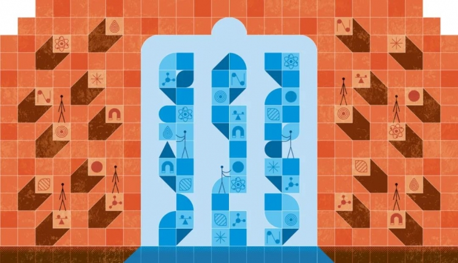
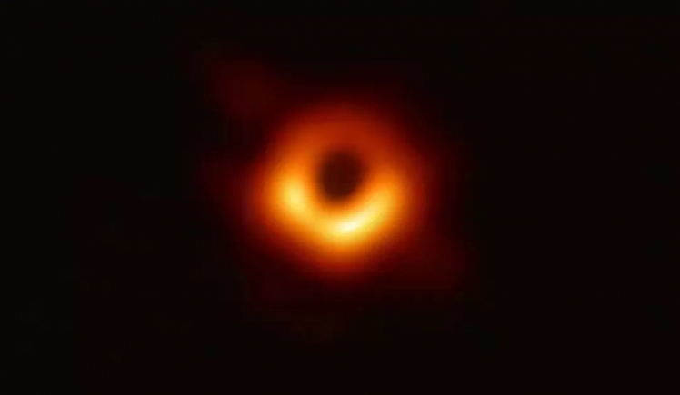
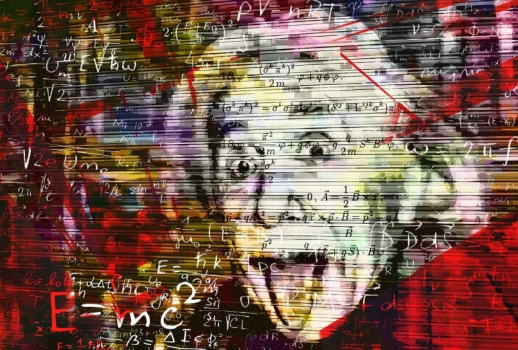

The End of Physics?
Posted

物理学到达终点了么？

撰文 | Robbert Dijkgraaf
01 物理学研究结束了么
物理学的研究结束了吗？人们常把21世纪叫做“生物学的时代”，或“人工智能的时代”，或者任何其他新兴领域的时代。于是，物理学只能屈居于上世纪——在那个黄金时代，相对论和量子力学的革命震撼了整个世界，基本粒子的发现产生了一系列诺贝尔奖。如今，人们担心物理学已经变成一片寸草不生的沙漠，即在未来几十年内，不会再有新的粒子被发现了。
我认为这种观点至少从三个方面来说是错误的。首先，对于一门被认为“已过巅峰”的学科来说，本世纪前二十年对物理学来说是相当成功的。我们在2012年发现了希格斯粒子，在2015年探测到了引力波（2016年宣布），以及在2019年看到了黑洞视界的第一张图像。这三件事都是罕见的科学大事件，它们刊登在新闻报纸头条，抓住了全世界的想象力。

人类历史上看到黑洞视界的第一张影像
但是，有人会说，这些发现的种子都是在过去的美好时光里播种的。黑洞和引力波是爱因斯坦在1915年提出的方程的直接结果。也许物理学的原创想法已经用完了？

图片来源：pixabay
这就引出了第二个论点。宇宙学的最新进展使我们可以相当肯定地说，95%的宇宙缺失了。这些缺失的部分由暗物质和暗能量组成，它们都是新的物理学中的神秘现象。只要这些（以及其他的）谜团存在，物理学的工作就不会完成。（我还要补充一点，理解一门学科的 5% 本身就是一项了不起的成就。）
“物理学已死”这种说法是极度夸张的。第三个原因来自一个更根本、更明确的错误：用发现新粒子或力来定义物理学进展是一种目光短浅的观点。它忽视了大部分学科知识，并且大大低估了我们仍然可以取得的成就。事实上我相信，我们目前所知只是物理学十分微小的一部分，还有太多等待被探索。
物理学的目的是用精确的数学方法来理解宇宙中物质和能量的所有表现形式，而我们还没有开始探索这种无限的可能性。宣称物理学已经终结，这就好比认为数学在引入自然数和基本算术之后就已经结束，或者化学自从周期表出现后就不再发展。学习国际象棋规则并不能使你成为大师。
事实是，最小粒子的领域并不是唯一一个你能找到物理学基本定律的地方。它们也可以从许多集体行为中“演生出来”。一个简单的例子就是声波，即物质分子的同步振荡。利用量子理论的规则，这些波本身可以用粒子来描述。这些“声子”是声音的基本单元，或称为“量子”，它们的行为类似于光子，即光的量子。因此，就像小说中能拉着自己的辫子从沼泽中爬出来的“吹牛大王”蒙乔森男爵一样，物理学是能够自我维持的——它可以利用自身产生新的能够用严谨的数学刻画的基本现象。
02 冒险才刚刚开始
基于目前已知的宇宙基本组成部分，我们可以制造出无数的物理系统。比如我可以想象一个颠倒的物理观。**不同于先研究自然现象后发现自然规律的过程，我们可以先设计一个新的规律，然后逆向构建一个系统，而这个系统表现出的现象可以用设计的规律描述。**比如说，物理已经远远超出了高中课本里物质的简单相——固相、液相、气相。量子力学的古怪结果，让许多潜在的“奇异”相成为可能。它们已经被编入理论探索的目录，现在我们能够在实验室中利用特殊设计的材料逐渐了解这些可能的物相。
科学正在发生更大转变，其中的一部分就是从研究“这是什么”到“什么是可能的”。在二十世纪，科学家们找到了构成现实的基本模块：组成所有物质的分子、原子和基本粒子；让所有生命成为可能的细胞、蛋白质和基因；构成人类信息和人工智能基础的比特、算法和网络。而在本世纪，我们将反过来探索用这些基本模块能够制造什么。
图片来源：pixabay
即使宇宙膨胀了140亿年，地球存在了大约40亿年，大自然也只探索了所有可能的设计中最微小的一部分。正如生物学家理查德·道金斯（Richard Dawkins）所喜欢说的那样，我们人类——以及其他所有曾经存在过的有机体——都是宇宙彩票的幸运中奖者。从数量惊人的可能的基因蓝图中，我们的代码被偶然地选出来，成为了一个真实存在的模型。我们周围所有形式的物质也是如此。在所有的分子和物质形式的选单中，地球上和宇宙中的自然过程只制造出了一个小样本。因此分子和生命形式所必须遵守的所有物理定律，也同样只有一小部分被演绎了出来。
但现在所有这些都在改变。在数百万年和数十亿年的时间尺度上，受宇宙和生物进化所驱动的，大自然令人苦恼的缓慢的发现过程，在实验室加速到了惊人的速度。这样的工作一开始可能感觉像是“人造”科学。但是，相比于野外发现的细菌，基因设计的细菌绝不是不真实的、没有研究价值的。展示了量子理论奇特之处的新奇一维和二维材料也同样如此。准确地说，这些新技术有效地将量子力学从原子和分子的限制中“解放”，并将其带到日常生活的宏观尺度。在某个时刻，我们将能实现包含了所有可能性的选单表上的每一项。
科学与所有现象有关，包括我们实验室和头脑中产生的现象。一旦我们充分理解了这个更加宏大的图景，一幅不同于以往科学研究的图景也就徐徐呈现。现在，科学之船终于开始离开自然雕刻出的安全的内河航道，驶向广阔海洋，探索一个拥有“人工”材料、生物、大脑甚至可能是更好的人类本身的美丽新世界。
图片来源：pixabay
冒险才刚刚开始。因此，我对物理学的乐观看法同样适用于所有其他科学分支：冒险才刚刚开始。
注：本文转载自“中科院物理所”，翻译：xux；审校：C&C；原文链接：https://www.quantamagazine.org/the-end-of-physics-20201124/ 制版编辑 | Livan